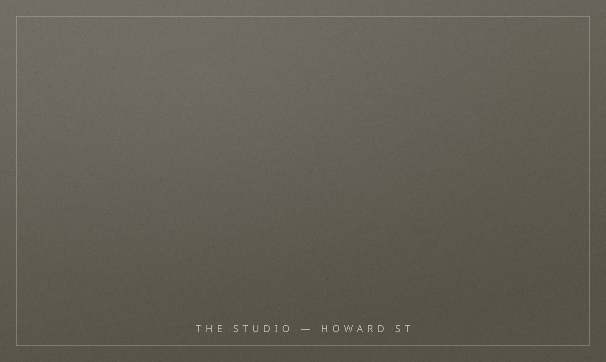

Design, practiced patiently.
Campos Goldberg is a full-service interior design studio on Howard Street, founded on a simple conviction: rooms should be composed, not decorated.
We believe luxury is not abundance — it is precision. The right object, in the right room, placed once and never questioned again.

The Process
Four MovementsListen
Every commission opens with conversation — about routine, ritual, and the objects already loved. We design nothing until we understand how mornings happen in your home.
Compose
Architecture, palette, and proportion are resolved as one drawing, not three. You review a complete point of view — never a mood board of maybes.
Craft
We commission the workrooms, ateliers, and mills directly — upholstery in Long Island City, plaster from Brooklyn, textiles from small European houses we have worked with for years.
Reveal
Installation happens in days, not months — art hung, beds made, flowers placed. You leave with keys and return to a finished life.
What the studio undertakes
- Full-Service Interior Design01
- Architectural Renovation Direction02
- Furniture, Objects & Art Procurement03
- Custom Furniture & Millwork Design04
- Styling & Turnkey Installation05